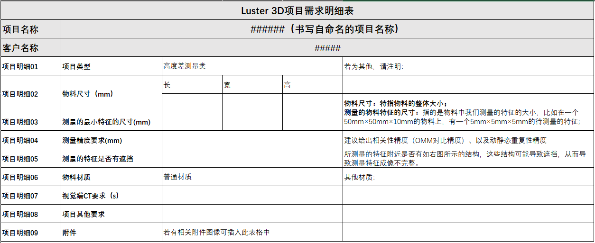

Hiện tại phần mềm VISIONAssembly (gọi tắt là VA) hỗ trợ nhiều loại camera từ các nhà sản xuất khác nhau. Dưới đây là mô tả về khả năng tương thích của từng loại camera.
Hiện tại, phần mềm VA hỗ trợ các loại camera 3D như bảng dưới đây. Thông tin chi tiết có thể tham khảo tại: Phụ lục / Danh sách camera 3D được hỗ trợ
| Loại camera | Nhà sản xuất | Giao diện vật lý | Mẫu được hỗ trợ | Phiên bản SDK | Phiên bản firmware |
|---|---|---|---|---|---|
| Laser tuyến tính | SmartRay | Cổng mạng | Hầu hết các mẫu | 5.5.0.91 | 5.1.1.3 |
| SSZN (ShenShi) | Cổng mạng | Một số mẫu | 3.3.2.45 | 3.3.2.54 | |
| FocalSpec | Cổng mạng | Tất cả mẫu | |||
| LMI | Cổng mạng | Hầu hết các mẫu | FSSDK_2.0.1 | ||
| Keyence | Cổng mạng | Dòng LJ-X | |||
| LVM (YiShi) | Cổng mạng | Tất cả mẫu | |||
| HIK (Hải Khẩu) | Cổng mạng | Dòng DP | |||
| Ánh sáng cấu trúc | LCubor | Cổng mạng | Tất cả mẫu | 1.8.4 | |
| RVC (Như Bản) | Cổng mạng / USB3 | Tất cả mẫu | 1.6.2 | ||
| MPS (ShengXiang) | Cổng mạng / USB3 | Dòng M, S | |||
| Laser điểm | Hypersen (Hải Bá Sơn) | Cổng mạng / USB3 | Dòng HPS-2000 |
Chú ý
Về camera LCubor: Phiên bản 1.6.9 và 1.8.2 có sự thay đổi lớn về phần cứng và SDK. Trong dự án cần xác nhận thông tin phần cứng, sử dụng driver và phần mềm VA tương ứng để tránh lỗi, crash, v.v.
Hiện tại phần mềm VA phiên bản 6.5 hỗ trợ driver camera từ phiên bản 1.8.3 trở lên, khi sử dụng phần mềm 6.5 vui lòng xác nhận phiên bản driver của camera LCubor đang sử dụng tại hiện trường.
Firmware của camera SmartRay có các phiên bản: 5.0.1.1, 5.1.1.3, Plus5.1.1.3 (dòng ECCO95+), 5.2.0.2. Đối với camera dòng 95/95+, khuyến nghị sử dụng phiên bản 5.1.1.3.
Ví dụ lựa chọn:
Mô tả sản phẩm:
Kích thước vỏ chắn: 23×12mm, cần chọn 15 điểm ở mép vỏ chắn để đo độ phẳng, chiều rộng mép là 0.5mm, chiều cao vật liệu là 2mm. Yêu cầu kiểm tra: độ tương quan <0.015mm. Có hai loại vật liệu, đều có độ phản xạ thấp, CT < 4s; đồng thời khách hàng cũng mong muốn có thể dùng chung cho sản phẩm có kích thước lớn hơn (cạnh hẹp lớn nhất: 14mm); khoảng cách làm việc > 20mm. Hình ảnh sản phẩm như sau:
Thông tin sản phẩm và hình ảnh sản phẩm, các điểm mấu chốt được tổng hợp như sau:
1. Kích thước sản phẩm: 23×12×2mm;
2. Hai loại vật liệu: đều có độ phản xạ thấp;
3. CT < 4s;
4. Độ tương quan < 0.015mm;
5. Phương thức trigger chưa xác định;
6. Khách mong muốn có thể dùng cho sản phẩm lớn hơn (cạnh hẹp nhất tối đa 14mm);
7. Khoảng cách làm việc > 20mm.
Dựa trên các điểm kỹ thuật trên, phân tích lựa chọn như sau:
Dựa trên kích thước sản phẩm, nếu quét theo chiều dài 14mm thì tất cả các camera hiện tại đều đáp ứng yêu cầu đo lường.
1. Xét đến chiều rộng mép vỏ chắn là 0.1mm, theo kinh nghiệm ứng dụng kỹ thuật, cần ít nhất 5~10 pixel chiều rộng để đo ổn định, do đó khuyến nghị độ phân giải theo XY là 0.01mm. Có thể chọn: SSZN SR8020, KEYENCE LJ-X8020, LMI: Gocator 2512/2510,
2. Xét đến yêu cầu khoảng cách làm việc > 20mm, loại bỏ LMI: Gocator 2512/2510;
3. SSZN SR8020 và KEYENCE LJ-X8020 đều có độ tương quan đo < 0.01mm; xét đến yếu tố cạnh tranh và các yếu tố khác, cuối cùng lựa chọn SSZN SR8020.

Tổng kết lại, người dùng có thể dựa vào cách tư duy chọn thiết bị ở trên để lựa chọn camera 3D phù hợp với dự án thực tế của mình; đồng thời, để hỗ trợ mọi người đánh giá dự án 3D tốt hơn, chúng tôi đã chuẩn bị bảng thu thập thông tin dự án 3D, có thể dựa theo nội dung thu thập trong đó để đánh giá tổng thể và chọn camera 3D; 
Phần tiếp theo, chúng tôi sẽ giới thiệu từng loại công nghệ của các dòng camera khác nhau được VA-3D hỗ trợ, người dùng có thể kết hợp thông tin kỹ thuật này với phần lựa chọn ở trên để hoàn thành việc chọn thiết bị.
Thông số vùng nhìn (FOV) của camera SmartRay như hình dưới:
Chú ý
FOV: Vùng nhìn của camera, hiểu đơn giản là: chiều rộng tối đa mà camera có thể chụp được; phần vượt quá chiều rộng này sẽ không nằm trong khung hình.
Thông số kỹ thuật dòng camera SmartRay ECCO95/95+ được VA hỗ trợ như bảng dưới:
Bảng tham khảo thời gian chụp CT của camera SmartRay trong VA, đơn vị: ms
Chú ý
CT trong bảng là kết quả thống kê của 10 lần chụp;
Người dùng cũng có thể ước lượng nhanh thời gian chụp ảnh CT trong VA như sau,
Thời gian chụp ảnh CT trong VA 
Chú ý
Có liên quan đến số lượng biên dạng
| Tần số quét | CT | Tần số quét | CT |
|---|---|---|---|
| 1000 Hz | 500 ms | 5000 Hz | 900 ms |
| 2000 Hz | 600 ms | 6000 Hz | 1000 ms |
| 3000 Hz | 700 ms | 7000 Hz | 1100 ms |
| 4000 Hz | 800 ms | 8000 Hz | 1200 ms |
Thời gian chụp ảnh chính xác CT cần xác định theo tình hình thực tế khi thu thập hình ảnh.
Thông số kỹ thuật của dòng camera SSZN SR6000 được VA hỗ trợ

Thông số kỹ thuật của dòng camera SSZN SR7000/8000 được VA hỗ trợ


Thông số kỹ thuật của dòng camera LMI FOCALSPEC được VA hỗ trợ
Bảng thông số kỹ thuật camera KEYENCE được VA hỗ trợ

Bảng thông số kỹ thuật camera Lcubor 3D được VA hỗ trợ

Thông số kỹ thuật của camera Hypersen (Hải Bác Sơn) được VA hỗ trợ

Thông số kỹ thuật camera RVC (Như Bổn) được VA hỗ trợ


Thông số kỹ thuật camera LVM (Dự Thị) được VA hỗ trợ


VA hỗ trợ ba dòng camera MPS: M, S028, S162